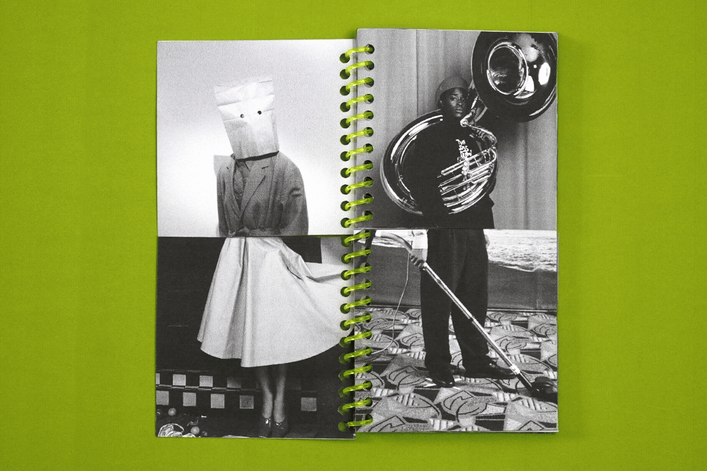
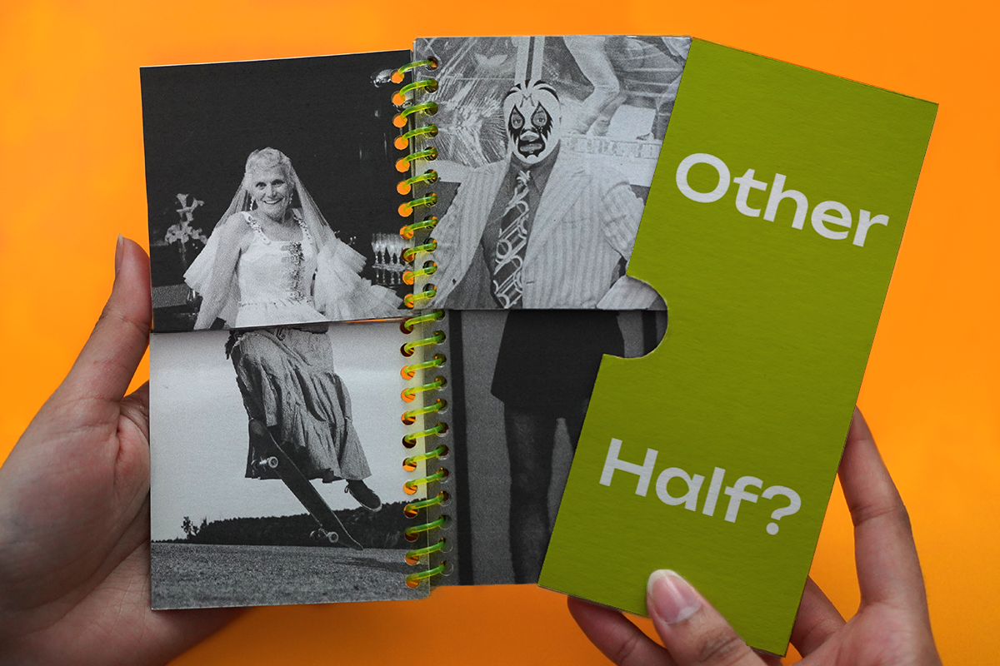
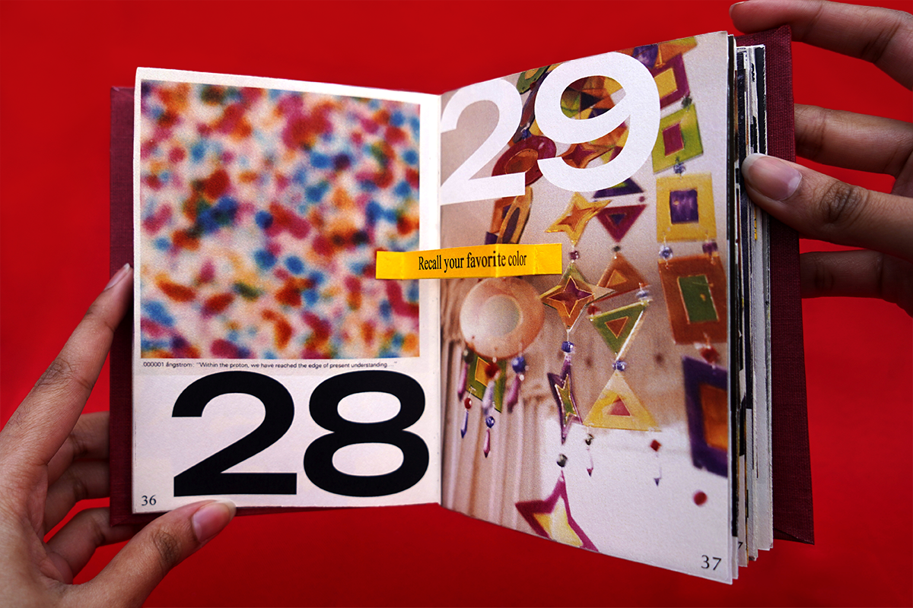
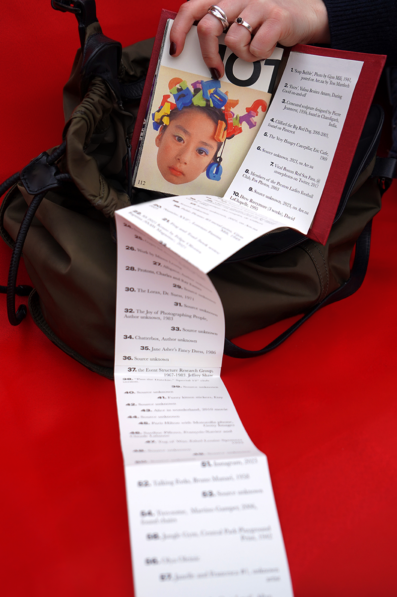
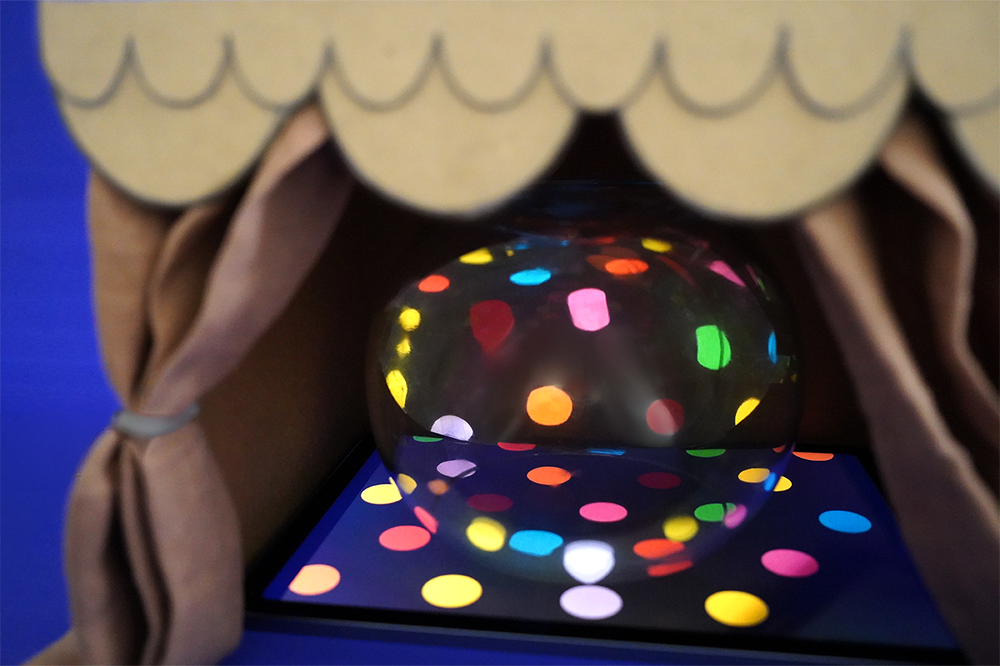
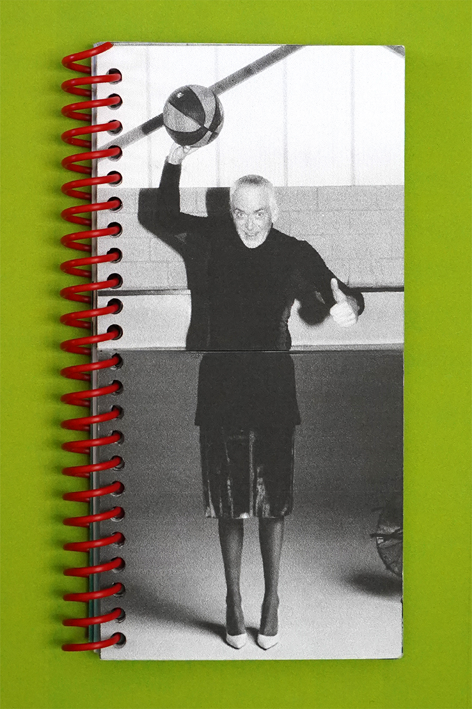

Perspective of Play
Perspective Of Play (POP) is an experiential collection that explores our distance from play in adulthood. While childhood is defined by experimentation, improvisation, joy and unintentional discovery, adulthood often prioritizes productivity, clarity and measurable outcomes. POP investigates the ways that sidelining play reshapes creativity, curiosity, and our comfort with uncertainty.
This project materializes a family of physical artifacts, each interpreting a different dimension of play: rules, surprise and storytelling, among these. Rules for Play, an interactive book of prompts, reveals the irony inherent in rules, as they both generate and restrict imagination. The Other Half?, a misaligned flip-book without a perfect match, resists resolution, thereby unsettling the adult urge to correct and complete. Welcoming Play, a stop motion piece, uses abstraction to illustrate an adult being pursued by shapes that embody playful instinct; the pursuit transforms resistance into acceptance as the figure ultimately yields to encounter.
Together, they form a testing ground for curiosity and uncertainty, encouraging playfulness and the rediscovery of genuine lighthearted pleasure.





